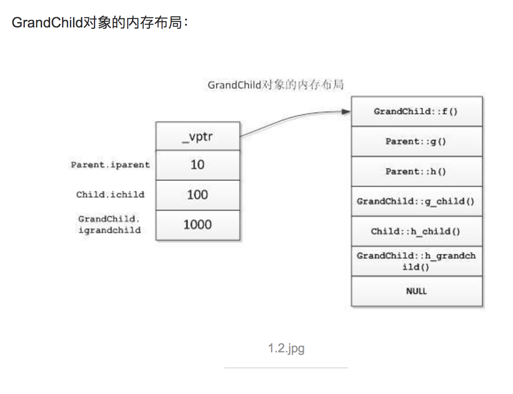

2017-07-10-my-c-cpp-wiki
Table of Contents
- 1.
C++中的多态 - 2. memmove
- 3. 实用函数
- 4. 子进程和父进程共享已打开的描述符
- 5. 动态链接库可以多个进程共同使用，但是extern出来的变量每个进程都是独一个
- 6. 一个简单的telnet服务器例子
- 7. TODO 动态分配二维矩阵
- 8. TODO 主要说明c和c++中的static和const关键字的区别联系。
- 9. show ip address detail
- 10. 带参数的宏的扩展
- 11. volatile关键字
- 12. 使用strsep来切分字符串
- 13. makefile中的两个冒号
- 14. 测试系统是大端还是小端
- 15. 查看gcc默认定义的宏
- 16. 固定结构体以1字节对齐
- 17. 统计一段操作的耗时
1 C++ 中的多态
#include <iostream.h> use namespace std; class animal { public: void sleep(){cout<<"animal sleep"<<endl;} void breathe(){cout<<"animal breathe"<<endl;} }; class fish:public animal { public: void breathe(){cout<<"fish bubble"<<endl;} }; void main() { fish fh; animal *pAn=&fh; pAn->breathe(); }

如上图，虚函数表在最前面。它是一个指针。虚函数表是在对象初始化的时候 （构造函数中）去设置的它。继承后的初始化是这样的：
- 子类先调父类的构造函数，父类先设置了虚表指针，此时虚表指针指向父 类的虚函数列表。
- 子类调用自己的构造函数时，重新设置了虚表指针，此时虚表指针指向子 类自己的虚函数列表。
- 通过指针或引用调用虚函数时，其实是查的虚函数指针指向的虚函数列表。
以上，就是 C++ 动态绑定的原理。
2 memmove
#include <string.h>
void *memmove(void *dest, const void *src, size_t n);
目的和源的指针可以重叠，它会先把src指向的内容copy到临时空间暂存，然 后再从临时空间copy到dest。
3 实用函数
3.1 debug时打印日志到文件中
#include <stdio.h> #include <stdlib.h> #include <string.h> int peng_log_to_file(const char *file_name, const char *output) { FILE *fp = fopen(file_name, "a+"); fprintf(fp, "%s\n", output); fclose(fp); } int main(int args,char *argv[]) { char *b = "nihao wo shi test"; peng_log_to_file("/tmp/kk.log", b); return 0; }
4 子进程和父进程共享已打开的描述符
#include <stdio.h> #include <stdlib.h> #include <string.h> #include <unistd.h> #include <sys/types.h> #include <sys/stat.h> #include <fcntl.h> int main(int args,char *argv[]) { pid_t childpid; int fd = open("/tmp/child_share_desc_with_parrent.log", O_RDWR | O_APPEND | O_CREAT, S_IRWXU); if ((childpid = fork()) == 0) { char buf[] = "from clild\n"; write(fd, buf, strlen(buf)); close(fd); printf("This is child\n"); exit(0); } else { char buf[] = "from parrent\n"; write(fd, buf, strlen(buf)); close(fd); printf("This is parrent\n"); } return 0; }
5 动态链接库可以多个进程共同使用，但是extern出来的变量每个进程都是独一个
lib.c ：
#include <stdio.h> static char *buf; int from_lib() { printf("This is hello world from lib\n"); return 0; } int install_buf(char *str) { buf = str; return 0; } int echo_buf() { printf("buf is %s\n", buf); return 0; }
写一个 change_buf.c 先修改一下 buf ：
#include <stdio.h> #include <stdlib.h> #include <string.h> #include <unistd.h> extern int from_lib(); extern int install_buf(const char *str); int main(int args,char *argv[]) { char *b = (char *)malloc(1024); sprintf(b, "Hi this is test\n"); install_buf(b); printf("I have install %s\n", b); while(1) { sleep(1); } return 0; }
然后 main.c 中再来查看一下 buf ：
#include <stdio.h> #include <stdlib.h> #include <string.h> #include <unistd.h> extern int from_lib(); extern int install_buf(const char *str); extern int echo_buf(); int main(int args,char *argv[]) { echo_buf(); return 0; }
Makefile 如下：
.PHONY:libtest a.out change all:a.out change libtest change:libtest echo "compil change" gcc change_buf.c -L. -ltest -o change a.out:libtest echo "compil a.out" gcc main.c -L. -ltest -o a.out libtest: gcc lib.c -fPIC -shared -o libtest.so clean: rm -rfv libtest.so a.out change
编译好后先执行 change 然后执行 a.out ：
➜ dynamic LD_LIBRARY_PATH="." ./change I have install Hi this is test
➜ dynamic LD_LIBRARY_PATH="." ./a.out buf is (null)
6 一个简单的telnet服务器例子
server.c ：
/* C socket server example */ #include<stdio.h> #include<string.h> //strlen #include<sys/socket.h> #include<arpa/inet.h> //inet_addr #include<unistd.h> //write int main(int argc , char *argv[]) { int socket_desc , client_sock , c , read_size; struct sockaddr_in server , client; char client_message[2000]; //Create socket socket_desc = socket(AF_INET , SOCK_STREAM , 0); if (socket_desc == -1) { printf("Could not create socket"); } puts("Socket created"); //Prepare the sockaddr_in structure server.sin_family = AF_INET; server.sin_addr.s_addr = INADDR_ANY; server.sin_port = htons(8888); //Bind if( bind(socket_desc,(struct sockaddr *)&server , sizeof(server)) < 0) { //print the error message perror("bind failed. Error"); return 1; } puts("bind done"); //Listen listen(socket_desc , 3); //Accept and incoming connection puts("Waiting for incoming connections..."); c = sizeof(struct sockaddr_in); //accept connection from an incoming client client_sock = accept(socket_desc, (struct sockaddr *)&client, (socklen_t*)&c); if (client_sock < 0) { perror("accept failed"); return 1; } puts("Connection accepted"); //Receive a message from client while( (read_size = recv(client_sock , client_message , 2000 , 0)) > 0 ) { //Send the message back to client write(client_sock , client_message , strlen(client_message)); } if(read_size == 0) { puts("Client disconnected"); fflush(stdout); } else if(read_size == -1) { perror("recv failed"); } return 0; }
Makefile :
.PHONY:all server all:server server: cc server.c -o server clean: rm -rfv server a.out *.o
7 TODO 动态分配二维矩阵
C语言中，动态分配一个矩阵的话。我现在找到了一个“模拟”的方法：使用指 针数组。为每个指针动态分配？但是有缺陷。
#define N 10 char *peng[N]; int i; for(i = 0;i < N;i++) { peng[i] = (char*)malloc(N * sizeof(char)); }
然后可以使用。不过这是因为char和int可以通用。所以只能算是模拟的。没有 找到完美解决方案。
还是解决了：
#include<stdio.h> #include<stdlib.h> #define N 4 int main() { int **peng; peng = (int **)malloc(2*sizeof(int*)); peng[0] = (int*)malloc(2*sizeof(int)); peng[1] = (int*)malloc(2*sizeof(int)); int i,j; for(i = 0;i < 2;i++) { for(j = 0;j < 2;j++) { peng[i][j] = 1; } } for(i = 0;i < 2;i++) { for(j = 0;j < 2;j++) { printf("%d\t",peng[i][j]); } printf("\n"); } free(peng[0]); free(peng[1]); free(peng); }
另外：
#include<stdio.h> #include<stdlib.h> #define N 4 int main() { int *peng[N]; /* peng = (int **)malloc(N*sizeof(int*)); */ peng[0] = (int*)malloc(N*sizeof(int)); peng[1] = (int*)malloc(N*sizeof(int)); peng[2] = (int*)malloc(N*sizeof(int)); peng[3] = (int*)malloc(N*sizeof(int)); int i,j; for(i = 0;i < N;i++) { for(j = 0;j < N;j++) { peng[i][j] = N * i + j; } } for(i = 0;i < N;i++) { for(j = 0;j < N;j++) { printf("%d\t",peng[i][j]); } printf("\n"); } free(peng[0]); free(peng[1]); free(peng[2]); free(peng[3]); /* free(peng); */ }
也就是说：int *peng[N] 和int **peng的区别就是前者是确定了一维的。动态 分配只能分配一维，而后者是完全动态分配的。这些都可以帮助理解：指向指针 的指针和指针数组。另外。多维数组的话，就是完全静态分配的了;比如：
int peng[10][10];
8 TODO 主要说明c和c++中的static和const关键字的区别联系。
8.1 c
c中static针对变量来说主要两个作用:
1:对于局部变量，static定义的变量作用域不变，即只能在该函数中访问。生 存期却不随函数调用的结束而结束。总结起来static类型的内部变量是一种只 能在某个特定函数中使用但一直占用存储空间的变量。另外，static类型的内 部变量会自动初始化为"0"，反之，普通内部变量不会进行初始化。
2：对于外部变量：作用域生存期都没有改变。static外部变量只能在本文件 中使用。不能通过extern到其他文件中使用。这样可以避免因为文件过多产生 重名。
c中static针对函数来说就一个作用：因为函数默认都是“外部的”，所以 static类型的函数就只能在本文件中使用，也是为了避免重名。
测试用程序如下：
/* file1 */ #include <stdio.h> #include <stdlib.h> #include <string.h> static int d = 45; static int a = 34; int fun3(); int fun2(); int fun(); int main(int argc, char *argv[]) { printf("file1\n"); fun(); printf("in main a = %d\n",a); fun2(); int b; printf("b = %d\n",b); static int c; printf("static c = %d\n",c); printf("int main d = %d\n",d); #ifdef ERROR fun3(); #endif return 0; } /* file2 */ #include <stdio.h> int a = 888; int fun() { printf("function\n"); static int a = 3; printf("in fun a = %d\n",a); return 0; } int fun2() { printf("in fun2 a = %d\n",a); return 0; } #ifdef ERROR extern int d; int fun3() { printf("in function d = %d\n",d); return 0; } #endif
makefile如下：
a.out:file2.o file1.c cc -g file2.o file1.c file2.o:file2.c cc -g -c file2.c clean: rm -rfv a.out *.o
8.2 c++
8.2.1 static
c++中static应该和c是兼容的。但是这个我还没有实际测试过。另外，c++中 static在类中使用的时候是另一种特殊的方式。类中的static变量或者函数 表示它是属于类型本身的，而不属于任何对象。例如统计某类型对象的个数 的时候就可以用到这样的static变量。
8.2.2 const
c++中const其实有了一些static的功能。另外，const还有一些特殊的功能。
cosnt定义的外部变量本身是局部的。不能直接通过extern就在其他文件中使 用。但是可以在定义的时候使用extern const这样来定义。在其他文件中就 可以通过extern const来声明并使用该变量了。
在c++中，定义常量的话一般都用const，而在c中一般是用宏#define来实现。
9 show ip address detail
// to show ip details; wrotten by pengpengxp 2014-10-14 #include <iostream> #include <cstdio> #include <cstring> #include <cstdlib> #include <cctype> #include <bitset> #include <arpa/inet.h> #include <string> using namespace std; int fun(const string IP) { struct in_addr in; unsigned int t; inet_aton(IP.c_str(),&in); string s(inet_ntoa(in)); cout<<s<<endl; memcpy(&t,&in,sizeof(struct in_addr)); t = ntohl(t); printf("%#x\n",t); bitset<32> a(t); cout<<a<<endl; bitset<8> a1(t>>24); bitset<8> a2(t>>16); bitset<8> a3(t>>8); bitset<8> a4(t); cout<<a1<<"\t"<<a1.to_ulong()<<endl; cout<<a2<<"\t"<<a2.to_ulong()<<endl; cout<<a3<<"\t"<<a3.to_ulong()<<endl; cout<<a4<<"\t"<<a4.to_ulong()<<endl; cout<<endl; return 0; } int main(int argc, char *argv[]) { if(argc <= 1) { cout<<"usage: "<<argv[0]<<" IP_address"<<endl; exit(-1); } int i; for (i = 1; i < argc; i++) { fun(argv[i]); } return 0; }
10 带参数的宏的扩展
带参数的宏，后面可能有一个 # 和两个 ## 。意思如下：
- 一个
#：会给对应的参数两边加上""，然后去掉前面的#。我 理解其实就是把它转成了字符串。 - 两个
##：直接就是把参数带入，一般就是用来形成新的变量。
下面的例子：
#include <stdio.h> /* this is test for macro */ #define N(name) char * a_##name = #name; int main(int args,char *argv[]) { N(pengpeng); printf("a = %s\n", a_pengpeng); N(xiepeng); printf("a = %s\n", a_xiepeng); return 0; }
两个 ## 形成新的变量名。一个 # 号把参数转成了字符串值。
11 volatile关键字
volatile提醒编译器它后面所定义的变量随时都有可能改变，因此编译后的程 序每次需要存储或读取这个变量的时候，都会直接从变量地址中读取数据。如 果没有volatile关键字，则编译器可能优化读取和存储，可能暂时使用寄存器 中的值，如果这个变量由别的程序更新了的话，将出现不一致的现象。下面举 例说明。在DSP开发中，经常需要等待某个事件的触发，所以经常会写出这样 的程序：
short flag; void test() { do1(); while(flag==0); do2(); }
这段程序等待内存变量flag的值变为1(怀疑此处是0,有点疑问,)之后才运行 do2()。变量flag的值由别的程序更改，这个程序可能是某个硬件中断服务程 序。例如：如果某个按钮按下的话，就会对DSP产生中断，在按键中断程序中 修改flag为1，这样上面的程序就能够得以继续运行。但是，编译器并不知道 flag的值会被别的程序修改，因此在它进行优化的时候，可能会把flag的值先 读入某个寄存器，然后等待那个寄存器变为1。如果不幸进行了这样的优化， 那么while循环就变成了死循环，因为寄存器的内容不可能被中断服务程序修 改。为了让程序每次都读取真正flag变量的值，就需要定义为如下形式：
volatile short flag;
需要注意的是，没有volatile也可能能正常运行，但是可能修改了编译器 的优化级别之后就又不能正常运行了。因此经常会出现debug版本正常， 但是release版本却不能正常的问题。所以为了安全起见，只要是等待别 的程序修改某个变量的话，就加上volatile关键字。
一般说来，volatile用在如下的几个地方：
- 中断服务程序中修改的供其它程序检测的变量需要加volatile；
- 多任务环境下各任务间共享的标志应该加volatile；
- 存储器映射的硬件寄存器通常也要加volatile说明，因为每次对它的读写 都可能由不同意义；
另外，以上这几种情况经常还要同时考虑数据的完整性（相互关联的几个标志 读了一半被打断了重写），在1中可以通过关中断来实现，2中可以禁止任务调 度，3中则只能依靠硬件的良好设计了。
12 使用strsep来切分字符串
#include <stdio.h> #include <stdlib.h> #include <string.h> int main(int args,char *argv[]) { char *c, *end; char *tok; /* 这里必须使用c来保存原始地址，如果不用c，原始地址丢失可能导 * 致段错误 */ c = end = strdup("xie\npeng\n"); tok = strsep(&end, "\n"); printf("tok = %s\n", tok); printf("end = %s\n", end); tok = strsep(&end, "\n"); printf("tok = %s\n", tok); printf("end = %s\n", end); free(c); return 0; }
13 makefile中的两个冒号
两个冒号比一个冒号就是可以定义同名的目标。比如下面的makefile的输出是 这样的
xie:: echo "first" xie:: echo "second"
/tmp $ make echo "first" first echo "second" second
单个冒号会有warning，且只执行最后一个。
xie: echo "first" xie: echo "second"
/tmp $ make Makefile:4: warning: overriding recipe for target 'xie' Makefile:2: warning: ignoring old recipe for target 'xie' echo "second" second
所以这样方式主要用在数组中，比如下面我可以通过数组定义 xie, peng 两
个target。然后单独定义一个 xie 也不会出错。
subdirs = xie peng ${subdirs}:: @(for dir in $(subdirs); do echo $$dir; done) xie:: echo "haha"
make xie 输出如下：
/tmp $ make xie xie peng echo "haha" haha
14 测试系统是大端还是小端
#include <stdio.h> void Little_Big_Endian_Check() { int m= 0x12345678; char c = *(char *)&m; //通过将int(4字节)强制类型转换成char单字节，c指向m的起始字节（低字节） printf("the size of integer is %ld \n",sizeof(m)); printf("*((char *)&m + 0):0x%x\n", *((char *)&m + 0)); printf("*((char *)&m + 1):0x%x\n", *((char *)&m + 1)); printf("*((char *)&m + 2):0x%x\n", *((char *)&m + 2)); printf("*((char *)&m + 3):0x%x\n", *((char *)&m + 3)); if(c == 0x12) //低字节存的是数据的高字节数据 { printf("It is Big-Endian!\n");//是大端模式 } else { printf("It is Little-Endian!\n");//是小端模式 } } int main() { printf("the program is used to test big or small!\n"); Little_Big_Endian_Check(); return 0; }
15 查看gcc默认定义的宏
gcc -E -dM - </dev/null
16 固定结构体以1字节对齐
#include <stdio.h> #include <stdlib.h> #include <string.h> #include <stdint.h> #define FHOS_CFG_HEADER_LEN 32 typedef struct fhos_cfg_header_s { uint8_t ver; uint32_t crc; uint32_t time; uint32_t size; char reserved[FHOS_CFG_HEADER_LEN - 13]; } __attribute__((packed, aligned(1))) fhos_cfg_header_t ; int main(int args,char *argv[]) { printf("sizeof(fhos_cfg_head) = %ld\n", sizeof(fhos_cfg_header_t)); return 0; }
17 统计一段操作的耗时
#include <sys/time.h> #include <stdio.h> float timedifference_msec(struct timeval t0, struct timeval t1) { return (t1.tv_sec - t0.tv_sec) * 1000.0f + (t1.tv_usec - t0.tv_usec) / 1000.0f; } int main(void) { struct timeval t0; struct timeval t1; float elapsed; gettimeofday(&t0, 0); /* ... YOUR CODE HERE ... */ gettimeofday(&t1, 0); elapsed = timedifference_msec(t0, t1); printf("Code executed in %f milliseconds.\n", elapsed); return 0; }